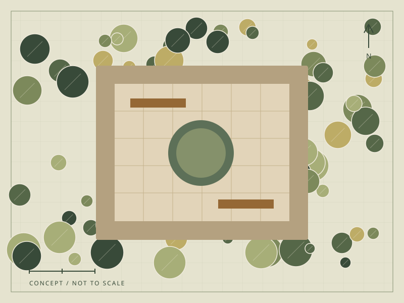

The studio
Begin with the way you live.
A garden can be a place to gather, a route through your day, or a small moment of stillness. Fieldwork is a fictional landscape studio exploring how those needs become a thoughtful design.
A clear plan
Understand the spaces, routes, and everyday priorities before choosing materials or plants.
Planting with purpose
Create texture and seasonal interest around the light, soil, and care a garden can support.
Room to grow
Carry the idea through a practical sequence, with room to revisit decisions as the garden changes.
In the sketchbook
Three ways to make room.
Original planting-plan studies show the thinking behind three different garden briefs. These are illustrative concepts, not completed commissions.

Concept focus
A little shelter. A lot of possibility.
A compact garden uses one generous tree, useful seating edges, and a planted threshold to feel like another room.
Open the garden studiesA place to begin
Imagine the garden differently.
Try a few questions about your garden and see how an inquiry could take shape.
Try the sample inquiry